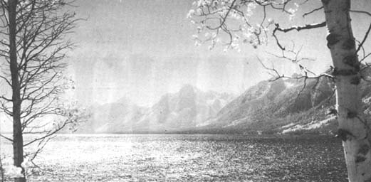

A couple of us MOTHER people were recently flown out to Grand Teton National Park to witness the dedication of a new Indian Arts Museum at Colter Bay. The trip gave us a fascinating insight into the way big and little government, advertising agencies and business, powerful families and struggling magazines interact in this country and - if we ever get caught up a little - we'll share those insights with you. For the moment, we'll just grab a minute to comment on the new museum and our National Parks System in general.
The Colter Bay Museum, we found, houses a brilliant collection of artifacts lovingly gathered over many years by a fine gentleman named David T. Vernon. I'm sure that many of our red brothers will take exception to yet another "white man's display" of their cultural heritage . . . but it should be noted that an honest attempt seems to have been made to assemble, house and present this particular collection in the best of taste and with great respect for the sacred vision on which "the old ones" of most Indian tribes based everything in their lives. It's at least noteworthy that the Colter Bay Museum has a special section in which you may buy real Indian handcrafts (not Hong Kong trinkets) from real Indians (not white girls tricked out in war bonnets). Yes, it's a small step . . . but a step. Perhaps the first proud nations that graced this continent will one day regain their rightful place in our land after all.
While we were in the Tetons we had a warm, friendly and highly informative conference with Gary E. Everhardt (Superintendent of Grand Teton National Park), Boyd Evison (Assistant Superintendent of Grand Teton) and Jim Coleman (Assistant Superintendent of Yellowstone National Park). They're a good bunch of men . . . clear-eyed, square-jawed and dedicated. We were impressed. Unfortunately, we've been increasingly unimpressed by the National Park Service high command that men like Everhardt, Evison and Coleman report to.
As you may or may not know, Friends of the Earth-a private environmental organization-has asked for the dismissal of George B. Hartzog, Jr., the Director of the National Park Service. FOE claims that Hartzog is taking the National Park Service downhill fast by refusing to preserve the parks as wilderness areas, by giving away NPS land in political deals, by allowing concessioners to turn parks into mini-cities, by opening up remote areas of parks to automobiles, by seeking to abolish park rangers in favor of administrators and by transferring park personnel so rapidly that such employees lose their effectiveness and perspective. Based on the (admittedly fragmentary) evidence we've gathered over the past year, we tend to agree with the FOE charges.
Then again--after talking with the rangers in the Grand Tetons-we are also aware of the sheer futility of trying to maintain our National Park System in the old ways. Thanks to population pressure and our society's increased mobility, it just can't be done. When we visited the Grand Tetons in late June, use of the park was already running 50% higher than it had the year before . . . and the use-rate was still climbing.
The problem, it seems to us, is the very language with which the National Park System was established. Something about "preserving the parks for the use of all the people". That was a noble sentiment 100 years ago when the first National Park (Yellowstone) was established . . . but living up to that single phrase has become an impossible task today. There's just too many of us now: if we let all the people in, there's no such thing as preserving and-conversely-preserving the beauty of the land automatically means excluding all the people and their trail bikes, campers, pup tents, dogs, kids and cotton candy. And those people (including you and me) must be excluded to some extent or their very pressure will shortly destroy our priceless wilderness heritage for all time.
To sum up, then, while we cannot agree with the decisions (pressure over preservation) that Mr. Hartzog seems to be making, we can sympathize with the man. Thanks to our national lack of planning, in the areas of population and land use . . . and our insane idea that a constantly increasing consumption of natural resources is somehow "good", we've forced Mr. Hartzog and the NPS to come up with answers to questions that should never have been asked in the first place. To a large extent, Hartzog is in the same bind that we're all now in . . . and trying to work our way out of. The question is: will he-and we-make it in time?
|
 |
|
|